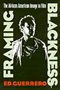

|
Voice
Over
The Making of Black Radio
Barlow,
William
Outstanding Academic Title, Choice, 1999 |

|
Softly, with Feeling
Joe Wilder and the Breaking of Barriers in American Music
Berger, Edward
Association for Recorded Sound Collections' Award for Excellence in the category of Best Historical Research in Recorded Jazz, 2015
|

|
The End of White World Supremacy
Black Internationalism and the Problem of the Color Line
Bush, Roderick
Paul Sweezy Marxist Sociology Award from the American Sociological Association conference, 2010 |

|
Critical
White Studies
Looking Behind the Mirror
edited
by Delgado, Richard and Jean Stefancic
Honorable Mention for Outstanding Books Awards, Gustavus
Myers Center for the Study of Bigotry and Human Rights in
North America, 1997 |

|
Framing
Blackness
The African American Image in Film
Guerrero,
Ed
Honorable Mention Theatre Library Association Award, 1994 |

|
Black
Theatre
Ritual Performance in the African Diaspora
edited
by Harrison, Paul Carter, Victor Leo Walker II and Gus Edwards
Finalist for the George Freedley Memorial Award for an outstanding
book in theatre or another area of live performance from the
Theatre Library Association, 2002 |

|
Jookin'
The Rise of Social Dance Formations in African-American Culture
Hazzard-Gordon,
Katrina
Honorable Mention of the De La Torre Bueno Prize from the
Dance Perspectives Foundations, 1991 |
|
From Black Power to Hip Hop
Racism, Nationalism, and Feminism
Hill Collins, Patricia
Honorable Mention at the Gustavus Myers Outstanding Book Awards, 2006 |

|
Savoring the Salt
The Legacy of Toni Cade Bambara
edited by Holmes, Linda Janet and Cheryl A. Wall
Selected as “‘The Best of the Best’ from the University Presses” Books You Should Know About” for the ALA Annual Conference, 2008 |

|
The Disenfranchisement of Ex-Felons
Hull, Elizabeth A.
Honorable Mention at the Gustavus Myers Outstanding Book Awards, 2006 |

|
Body Language
Sisters in Shape, Black Women's Fitness, and Feminist Identity Politics
Lau, Kimberly J.
Elli Köngäs-Maranda Professional Prize, American Folklore Society, 2011 |

|
The
Possessive Investment in Whiteness
How White People Profit from Identity Politics
Lipsitz,
George
Outstanding Books Award, Gustavus Myers Center for the Study
of Bigotry and Human Rights in North America, 1999 |

|
A
Life in the Struggle
Ivory Perry and the Culture of Opposition
Lipsitz,
George
Eugene Kayden Prize for Best University Press Book, 1989
Anisfield-Wolf Book Award in Race Relations, 1989 |

|
The City on the Hill from Below
The Crisis of Prophetic Black Politics
Marshall, Stephen H.
American Political Science Association's Foundations of Political Theory First Book Award, 2012 |

|
Unbought and Unbossed
Transgressive Black Women, Sexuality, and Representation
Melancon, Trimiko
College Language Association Creative Scholarship Book Award, 2016
|

|
Swingin'
at the Savoy
The Memoir of a Jazz Dancer
Miller,
Norma with Evette Jensen
Norma Miller is a recipient of the 2003 National Endowment
for the Arts National Heritage Fellowships, 2003 |

|
A City within a City
The Black Freedom Struggle in Grand Rapids, Michigan
Robinson, Todd E. Outstanding Academic Title,
Choice, 2013
Chosen as the Grand Rapids Mayor's Book of the Year, 2016 |

|
Silent Gesture
The Autobiography of Tommie Smith
Smith, Tommie and David Steele
Nominated for an NAACP Image Award in the category “Outstanding Literary Work – Biography/Autobiography” |

|
The
Black Female Body
A Photographic History
Willis,
Deborah and Carla Williams
Outstanding Academic Title, Choice, 2002
Finalist for the Publishers Marketing Association's Ben Franklin
Award, Reference Category, 2003 |

|
Black Venus 2010
They Called Her 'Hottentot'
edited by Willis, Deborah
Susan Koppelman Award for the Best Edited Volume in Women's Studies by the Popular Culture/American Culture Association, 2011 |

|
Envisioning Emancipation
Black Americans and the End of Slavery
Willis,
Deborah and Barbara Krauthamer One of the Top 25 Outstanding Academic Titles,
Choice, 2013
Outstanding Literary Work-Non-Fiction, NAACP Image Awards, 2014 |

|
No More Invisible Man
Race and Gender in Men's Work
Wingfield, Adia Harvey
Distinguished Book Award from the American Sociological Association's (ASA) section on Race, Gender and Class, 2014
Richard A. Lester Prize from the Industrial Relations Section at Princeton University, 2014 |